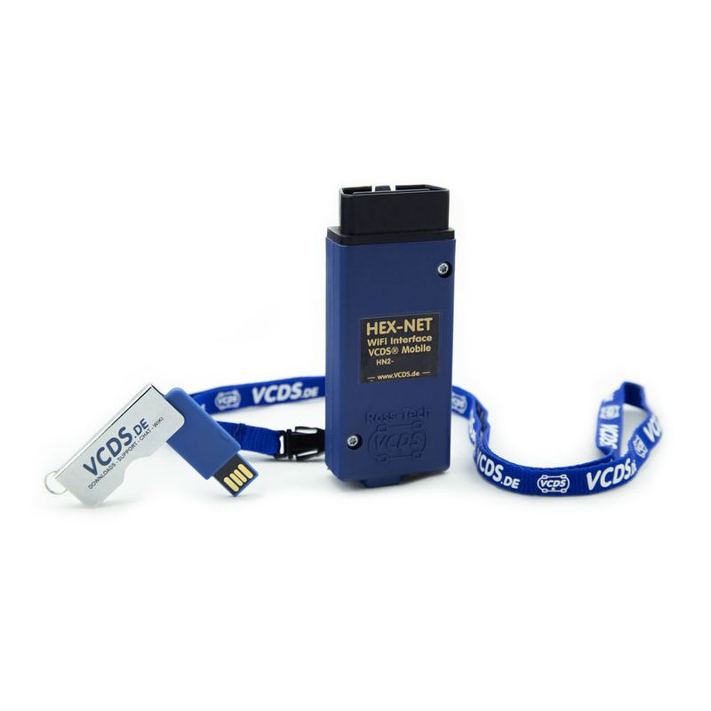
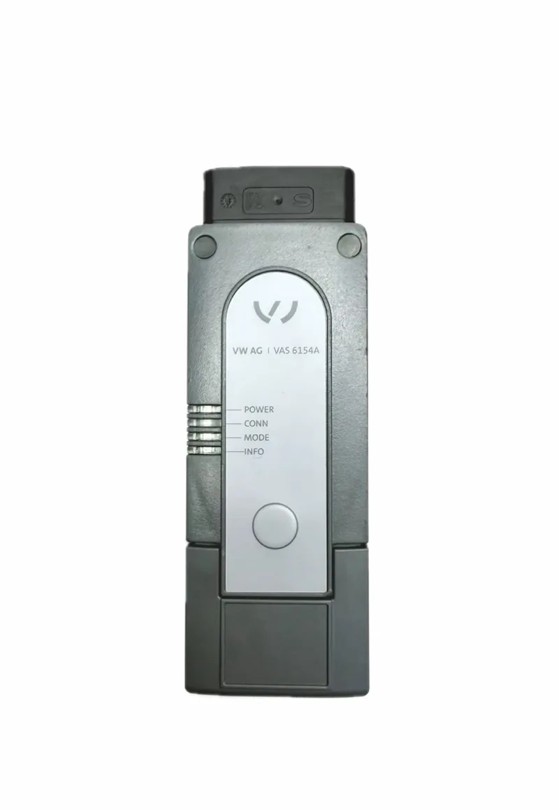
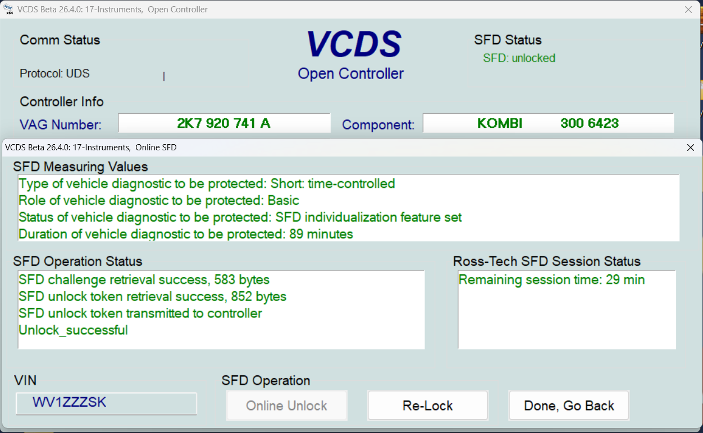
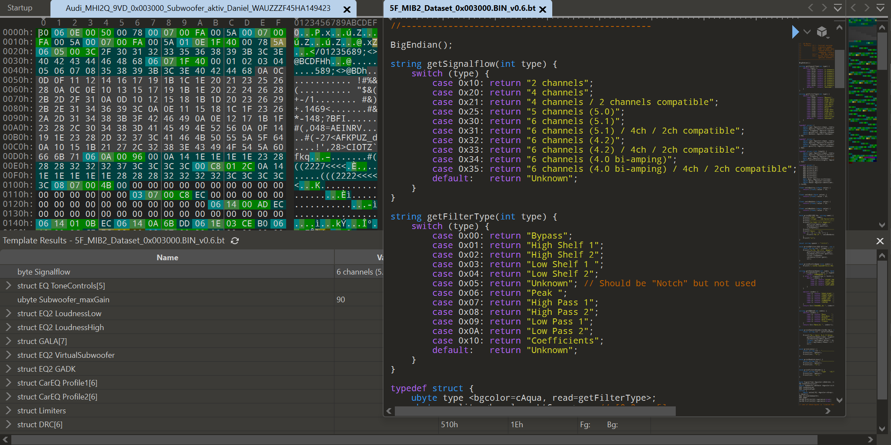

VCDS
Der Klassiker unter den Diagnose-Interfaces für den Volkswagen-Konzern: Fehlerspeicher auslesen und interpretieren, Grundeinstellungen, Codierung von Steuergeräten sowie erweiterte Messwertblöcke für die tiefergehende Fehlersuche.
Fahrzeugdiagnose · Volkswagen Konzern
51.77° N · 7.44° E — Lüdinghausen, Deutschland
Einer der führenden Diagnosespezialisten in Deutschland für Fahrzeuge des Volkswagen-Konzerns — spezialisiert auf VCDS, VCP und ODIS sowie auf SFD (Schutz Fahrzeug Diagnose) und SFD2, UNECE-Konformität und die fachgerechte Modifikation von Datensätzen und Steuergeräten.
Seit vielen Jahren beschäftige ich mich intensiv mit der Diagnose-, Codier- und Steuergeräte-Landschaft des Volkswagen-Konzerns. Mein Anspruch ist es, Fahrzeugsysteme nicht nur auszulesen, sondern wirklich zu verstehen — von der klassischen OBD-Diagnose bis zu modernen, gateway-gesicherten Architekturen mit SFD (Schutz Fahrzeug Diagnose) und dessen Weiterentwicklung SFD2.
Von der klassischen Diagnose bis zur sicherheitsrelevanten Steuergeräte-Konfiguration — jedes Werkzeug und jede Norm hat ihren eigenen Anwendungsbereich.

Der Klassiker unter den Diagnose-Interfaces für den Volkswagen-Konzern: Fehlerspeicher auslesen und interpretieren, Grundeinstellungen, Codierung von Steuergeräten sowie erweiterte Messwertblöcke für die tiefergehende Fehlersuche.
Sicherer Umgang mit dem VW Communication Protocol / VCP-Tooling für neuere Fahrzeuggenerationen — inklusive gateway-basierter Kommunikation und der Besonderheiten moderner E/E-Architekturen.

Herstellernahe Diagnose mit ODIS Service und ODIS Engineering: Steuergeräte-Programmierung, Flash-Vorgänge, Guided Fault Finding und die Interpretation komplexer Prüfabläufe nach Konzernvorgaben.

SFD (Schutz Fahrzeug Diagnose) sowie die Weiterentwicklung SFD2 — das Sicherheitskonzept des Konzerns für den geschützten Zugriff auf sensible Steuergeräte. Freischaltung und Bearbeitung ausschließlich über die dafür vorgesehenen, zertifizierten Zugangswege.
Beratung und Einordnung zu den UNECE-Regularien für Cybersecurity-Management (CSMS) und Software-Update-Management (SUMS) — relevant für Typgenehmigung, Nachrüstung und Diagnosefähigkeit moderner Fahrzeuge.

Fachgerechte Anpassung, Adaption und Konfiguration von Steuergeräte-Datensätzen — von der Codierung einzelner Funktionen bis zur Abstimmung ganzer Steuergeräte-Verbünde nach Fahrzeug- und Ausstattungsvariante.
Systematische Fehlerspeicheranalyse bei komplexen, wiederkehrenden oder markenübergreifenden Problemen im Volkswagen-Konzern.
Anpassung von Steuergeräte-Funktionen und Datensätzen an Fahrzeug- und Kundenanforderungen, inklusive sauberer Rückverfolgbarkeit.
Begleitung bei Diagnose- und Programmierarbeiten an SFD- und SFD2-geschützten Steuergeräten über zertifizierte Zugangswege.
Einordnung von UNECE R155/R156-Anforderungen für Werkstätten, Prüforganisationen und Fahrzeugbetreiber.
Praxisnahe Weitergabe von Diagnose-Know-how an Werkstattteams — von VCDS-Grundlagen bis zu ODIS-Spezialthemen.
Kurze Klärung von Fahrzeug, Problemstellung und benötigtem System (VCDS / VCP / ODIS).
Strukturierte Fehlersuche bzw. Konfiguration vor Ort oder in Zusammenarbeit mit der Werkstatt.
Codierung, Adaption oder Freischaltung — dokumentiert und nachvollziehbar.
Protokoll der durchgeführten Arbeiten inklusive relevanter Prüf- und Freigabeschritte.
Für Anfragen zu Diagnose, Codierung oder SFD-/SFD2-/UNECE-Themen im Volkswagen-Konzern stehe ich gerne zur Verfügung.
E-Mail schreiben